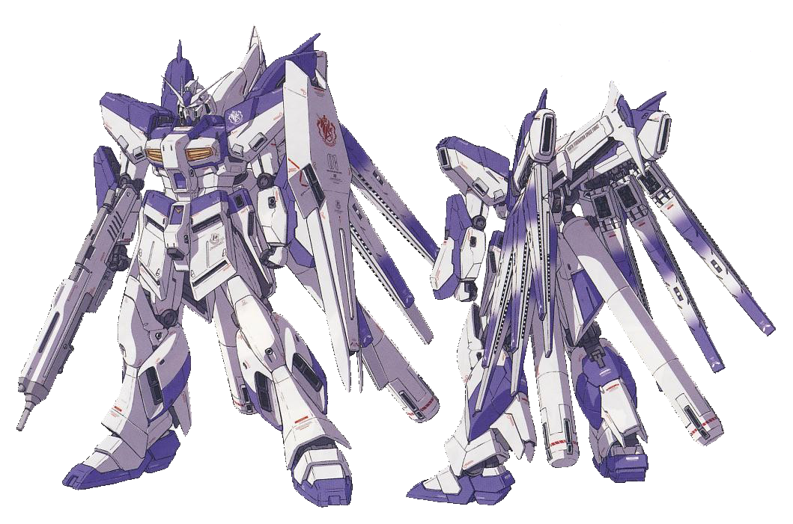
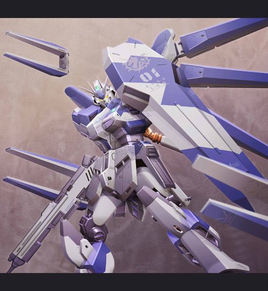
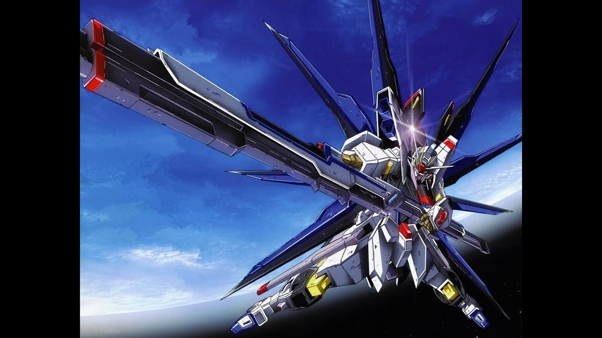
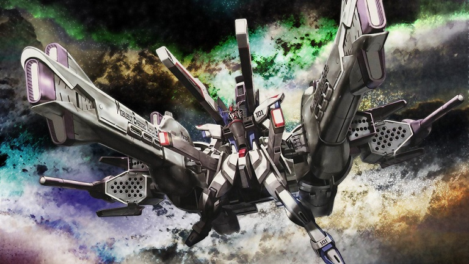
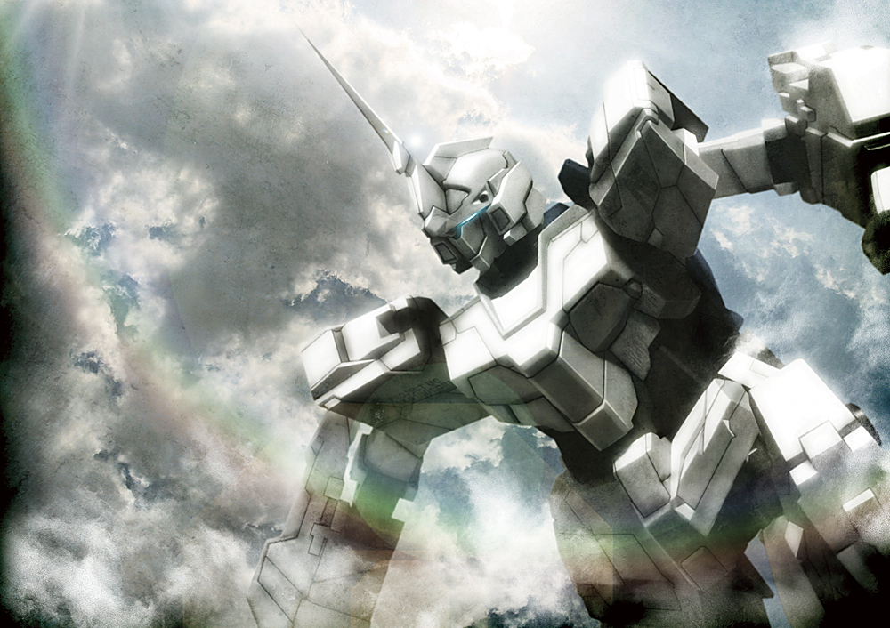
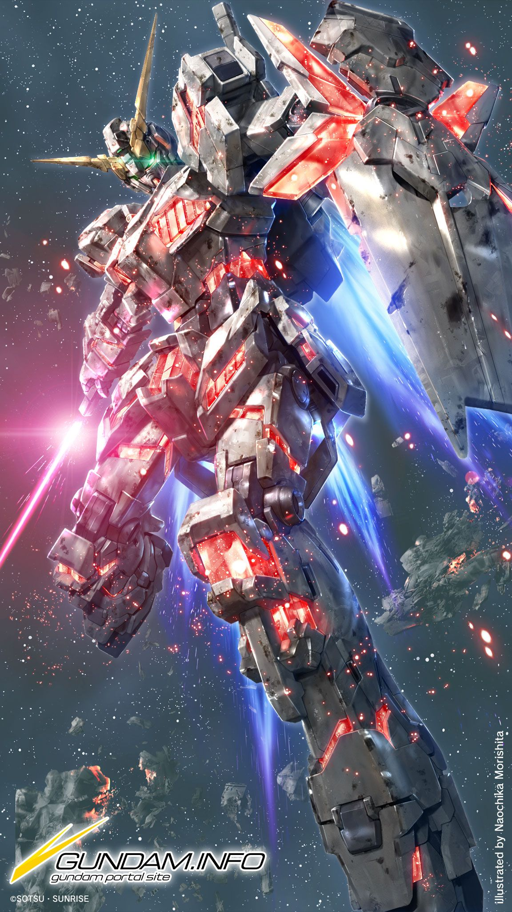
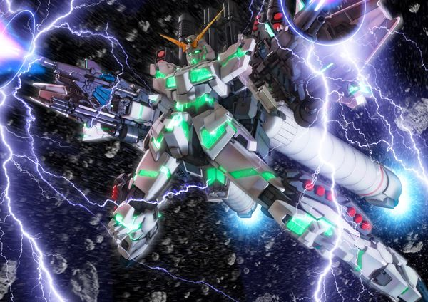

第1位
Hi-νガンダム（ハイニューガンダム）
 型番 RX93-ν2
パイロット アムロ・レイ
頭頂高 20.0m
本体重量 27.9t
装甲材質 ガンダリウム合金
武装 頭部バルカン砲×2
腕部単装マシンガン
(ver.Ka: 4連装＋ビームサーベル)
ビームサーベル×3
ビームライフル
フィン・ファンネル×6
ニュー・ハイパー・バズーカ
ハイパー・メガ・バズーカ・ランチャー
シールド（ビームガン内蔵）
Hi-νガンダムとは、『CCA-MSV』に登場、又は小説『機動戦士ガンダム 逆襲のシャア ベルトーチカチルドレン』に登場したνガンダムをベースに設定されたモビルスーツです。
νガンダムとは大分外見にも違いがあり、機体カラーは「白と青」、もしくは「白と紫」の2色を基調としνガンダムでは背中に板のように背負っていた６基のフィン・ファンネルが、背部中央にスタビライザー、その左右にファンネルラック、その下にスラスターとプロペラント兼補助スラスターユニットという構成となっており、フィン・ファンネルを懸架したファンネルラックは翼を模したような姿となっている。背部にはスタビライザーを装備しており、AMBACシステムとスラスターとしての機能を併せ持つ。フィン・ファンネルはエネルギーの再充填機能を持った2基のラックに、片方3基ずつをラックから吊り下げるようにマウントする。
最大の特徴としては、νガンダムでは使い捨てだったフィン・ファンネルをチャージ可能にした点。これにより高い攻撃能力を誇るフィン・ファンネルの稼働時間がさらに延長されている。νガンダムにはない武装として、ロンド・ベル隊の旗艦「ラー・カイラム」に直接ケーブルを繋いでエネルギーの供給を受けることで高威力のメガ粒子砲を放てる「ハイパー・メガ・バズーカ・ランチャー」と、右袖口に内蔵された「腕部マシンガン」を新たに備え、他の武装も形状や性能が異なっている。
第2位
ストライクフリーダムガンダム
型番 ZGMF-X20A
パイロット キラ・ヤマト
全高 18.88m
重量 80.09t
装甲材質 ヴァリアブルフェイズシフト装甲
武装 MMI-GAU27D 31mm近接防御機関砲×2
MA-M21KF 高エネルギービームライフル×2
MA-M02G シュペールラケルタビームサーベル×2
MX2200 ビームシールド×2
MMI-M15E クスィフィアス3レール砲×2
EQFU-3X スーパードラグーン 機動兵装ウイング
MA-80V スーパードラグーン ビーム突撃砲×8
MGX-2235 カリドゥス複相ビーム砲
特殊装備 MS埋め込み式戦術強襲機「ミーティア」METEOR （Mobilesuit Embedded Tactical EnfORcer＝モビルスーツ埋め込み式戦術強襲機）
全長 99.46m（MS連結時）
全幅 60.12m（MS連結時）
重量 552.42t（ミーティアのみ）
ミーティアの武装 93.7cm高エネルギー収束火線砲×2
60cmエリナケウス 対艦ミサイル発射管×77
120cm高エネルギー収束火線砲×2
MA-X200 ビームソード×4
ミーティアの装備状態（画像の機体はフリーダムガンダム）

ストライクフリーダムガンダムとは、ZGMF-X10A フリーダムガンダムの直接の後継機となるように開発された機体で、フリーダムの特性を受け継ぎつつ最新技術を惜しみなく投入し、機体性能をフリーダムの数倍にまで高められた機体です。
フリーダムガンダムとの違いは、フリーダムガンダムでは搭載されていなかった背中にある８基の スーパードラグーン ビーム突撃砲が追加されています。さらに、フリーダムの頃からある全ての武装を一斉に撃つフルバーストモードが武装を追加することにより強化されている。
極限まで高性能化した機体の性能を充分に引き出し得るパイロットが搭乗する事を前提条件としたハイスペックを追求し尽くしたこの機体は、キラ・ヤマト以外のパイロットでは操縦困難な機体となっています。そして、キラ・ヤマトの専用機だからこそ成し得た超高性能化です。
第3位
ユニコーンガンダム
 ユニコーンモード  デストロイモード型番 RX-0
パイロット バナージ・リンクス
全高 ユニコーンモード時：19.7m
デストロイモード時：21.7m
本体重量 23.7t
全備重量 42.7t
装甲材質 ガンダリウム合金
出力 3,480kW（デストロイモード時は測定不能）
推力 142,600kg（デストロイモード時は測定不能）
センサー有効半径 22,000m（デストロイモード時は測定不能）
武装 60ミリバルカン砲×2
ビーム・マグナム×1
ハイパー・バズーカ×1
ビーム・サーベル×4
シールド×1

（フルアーマーユニコーンガンダム時）全高 ユニコーンモード時：19.7m
デストロイモード時：21.7m
本体重量 45.1t
全備重量 76.9t
出力 3,480kW（デストロイモード時は測定不能）
推力 189,700kg（デストロイモード時は測定不能）
センサー有効半径 22,000m
武装（フルアーマーユニコーンガンダム時） 60ミリバルカン砲×2
ビーム・マグナム×1
ハイパー・バズーカ×2
ビーム・サーベル×4
シールド×3
ビーム・ガトリングガン×6
3連装ハンド・グレネード・ユニット×8
3連装対艦ミサイル・ランチャー×2
グレネード・ランチャー×2
ハイパー・ビーム・ジャベリン（設定のみ）
アームド・アーマーDE×3（『バンデシネ』）
ユニコーンガンダムとは、アニメ、又は小説の機動戦士ガンダムUCに登場する主人公の機体です。
ユニコーンガンダムでニュータイプ専用機の開発はその到達点を迎えたが、同時に人が制御できない超常的な力を発揮するまでになってしまったため、以後のMSには当機の技術は具体的な継承はなされていません。
また、ユニコーンと呼ばれるのは１号機であるこの機体であり、２号機、３号機に関しては他の呼ばれ方をしています。
そして、１号機のみにLa+（ラプラス）プログラムと呼ばれる物が組み込まれており、そのプログラムには連邦、ネオジオンが求めているラプラスの箱のありかが記されています。
ユニコーンガンダム系列にはNT-Dと呼ばれる特殊な機体制御システムがインストールされています。NT-D発動時にユニコーンガンダムは、戦闘形態であるデストロイモードに変身する。
NT-Dの略称は表向きには「ニュータイプ・ドライブ」の略であるとされているが、その実態はジオン・ズム・ダイクンの提唱したニュータイプ論を否定し、それと結びついたジオンの理念を根絶する「ニュータイプ・デストロイヤー」である。
デストロイモード時に、サイコミュ・ジャックというサイコ・フィールドを掌から放出し、敵機のサイコミュ兵器のコントロール制御を奪って自機の兵装としたり、敵機体に干渉し一時的に操縦不能にすることが出来る。
フルアーマーユニコーンガンダムとは、「袖付き」の艦隊勢力との最終決戦を控え、彼我の戦力差を埋めるべく設計されたユニコーンの強化プランである。
シールド3枚、ビーム・ガトリングガン6挺、ハイパー・バズーカ2挺、ジェスタ用グレネード・ランチャー、スタークジェガン用3連装対艦ミサイル・ランチャー、ジェガン用3連装ハンド・グレネード・ユニット4セット、脚部3連装ハンド・グレネード・ユニット左右各2セットと、機種を問わずネェル・アーガマに保管されていた武装を可能な限り搭載した結果、合計17門にも及ぶ火砲を備え、MS単機として最大級の大火力を手に入れた。背面には、流用追加武装によって増加した機体重量を取り回すため、宇宙用サブフライトシステムである94式ベースジャバーのスラスター部を転用し追加マウント・フレームで接続した、プロペラントタンクを兼ねた大型ブースターユニットを備えている。使用済みの武装はデッドウェイト化を避けるため、随時切り離せる。
最終決戦時、敵であるネオ・ジオングと戦いサイコシャードにより、殆どの武装を破壊されて尚格闘戦をし勝利した。
作成者：森園 翔梧 更新日：2019/2/1